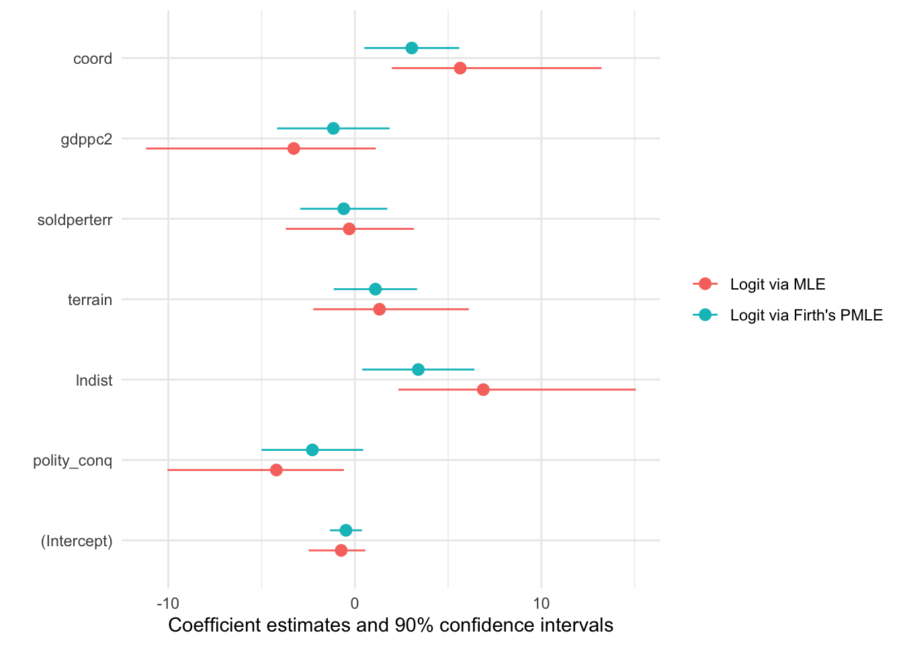

The goal of {crdata} is to provide easy access to data I’ve used in research and teaching, and its documentation.
Minimal Example
Here’s a minimal example to illustrate the recommended use.
# install package (once per computer)
# remotes::install_github("carlislerainey/crdata")
# load data (once per session)
weis <- crdata::weisiger2014
# open documentation (as needed)
?crdata::weisiger2014Installing the Package
To install the development version from GitHub use:
# install latest crdata package from github
# install.packages("remotes")
remotes::install_github("carlislerainey/crdata")I have no plans at the moment to upload to CRAN.
Data Sets
| Data Set | References | Topics |
|---|---|---|
weisiger2014 |
Weisiger (2014); Rainey and McCaskey (2021) | Logistic regression in small samples; Firth’s logit; R packages {brglm2} and {logistf}. |
Using the Data
There are three ways to access the data. I’ll illustrate the syntax with the weisiger2014 data set.
-
Recommended: First, you can use
weis <- crdata::weisiger2014. I prefer this approach because it mirrorsweis <- read_csv(path)most closely. - Second, you can refer to the data set with the
::operators without creating an object. Anytime you want to use theweisiger2014data set, simply usecrdata::weisiger2014. - Third, you can run
library(crdata), which lazily loads all the data sets, so thatweisiger2014(and all others) are available without thecrdata::prefix.
To see the documentation, run ?crdata::weisiger2014.
Example
For example, McCaskey and Rainey (2021) uses data from Weisiger (2014) to illustrate Firth’s logit using a binary outcome in small samples. Here’s a comparison of logit models fit using maximum likelihood and Firth’s penalized maximum likelihood.
# load packages
library(tidyverse)
# load data
weis <- crdata::weisiger2014
# rescale weisiger2014 explanatory variables using arm::rescale()
rs_weis <- weis %>%
mutate(across(polity_conq:coord, arm::rescale))
# fit models
f <- resist ~ polity_conq + lndist + terrain + soldperterr + gdppc2 + coord
ls <- lm(f, data = rs_weis) # lpm (replicates Table 2 Model 3 of Weisiger 2014)
mle <- glm(f, data = rs_weis, family = "binomial") # logistic regression
pmle <- glm(f, data = rs_weis, family = "binomial", method = brglm2::brglmFit) # logistic regression
# plot coefficients
modelsummary::modelplot(list("Logit via MLE" = mle,
"Logit via Firth's PMLE" = pmle),
conf_level = 0.90)
Citation
Please cite the authors of the original data (both the data set and the article)! The appropriate references to papers and data sets are given in the help file for each data set (e.g., ?crdata::weisiger2014).